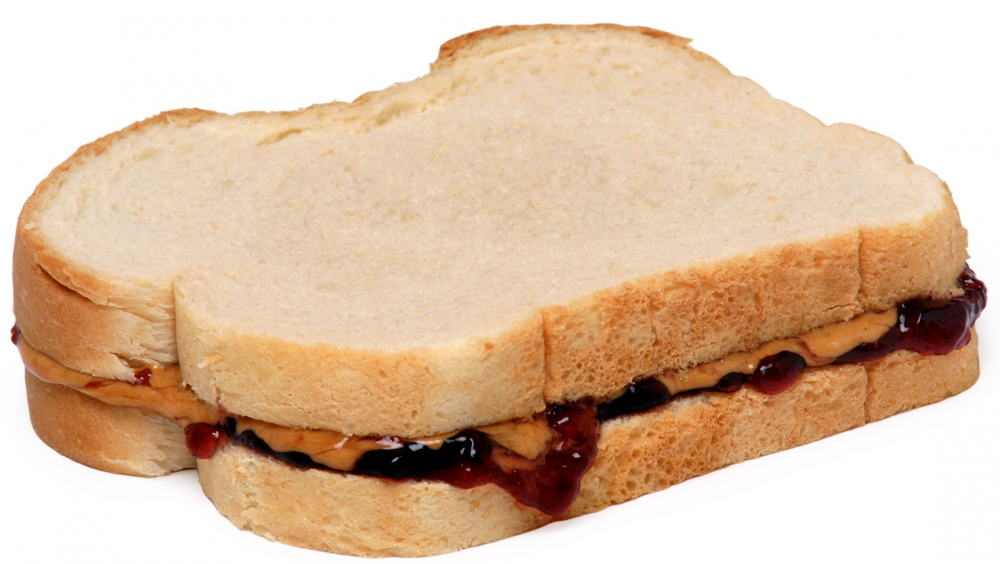

Home
PB&J Sandwich

Description
An American staple, the PB&J (peanut butter and jelly) sandwich is a timeless classic. It can be made in just a few minutes. This recipe takes this classic further with more taste for those with more time.
Ingredients
- 2 silces of bread
- Peanut butter
- Strawberry jam (or another flavor)
- Salt
Steps
- Toast the bread using a stove or a toaster until golden and crunchy
- Cut the silces of bread into two triangles
- On two of the four triangular bread silces, spread peanut butter with a knife
- On the other two, spread jam
- Sprinkle sold on the jam
- Close the sandwich, matching a triangular silce of bread with peanut butter with one with jam
- Enjoy!